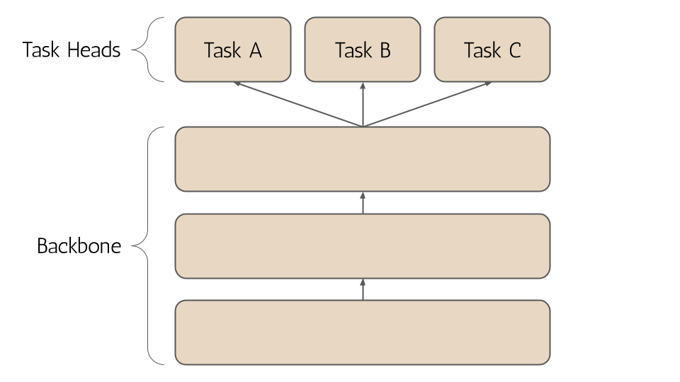
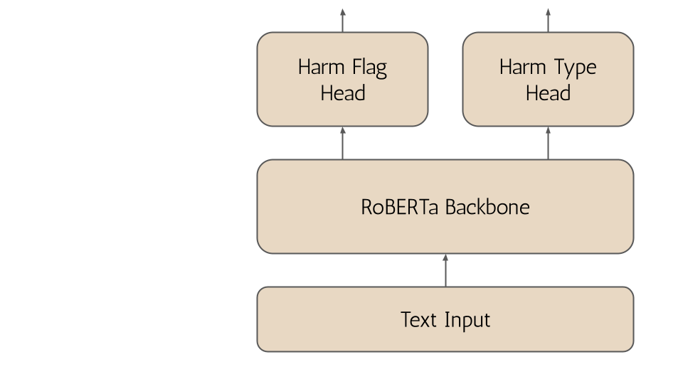
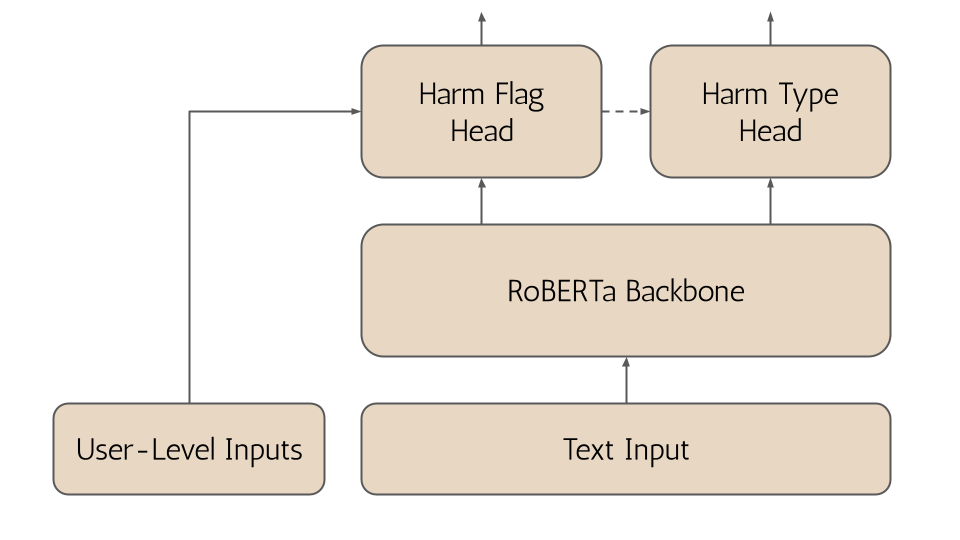

The Lernaean Hydra, a many-headed serpentine water monster, has been living with us for over 2,700 years.1 Heracles is said to have used the Hydra’s poisonous blood to dip arrows later used to kill the centaur Nessus.2 Today the Hydra—reified in many forms—continues to augment our tools in the hunt for artificial intelligence.
Production machine learning systems require teams of expert problem-solvers, each with a unique skill set, collaborating closely together to maintain and improve performance. Each member contributes their expertise, and their combined effort leads to a solution greater than what any individual could achieve alone. In what can perhaps be characterized as a fit of introspection, distilling the essence of this expert collaboration into the ML systems themselves has been undergoing a radical transformation. This is the world of ensemble machine learning.
It is believed that a specific form of ensemble learning—Mixture of Experts—is behind one of the most powerful closed-sourced LLMs available today. However, unlike the well-coordinated teams of engineers who build these systems, traditional ensemble systems didn’t have direct ways to learn from or grow alongside each other. Instead they leveraged the power of consensus and aggregation. Knowledge transfer is an essential part of building successful ML teams, but the models in an ensemble share little information between each other and are agnostic to how their predictions are used downstream.
Welcome to a series of blog posts that is not about ensemble learning. Instead, this series focuses on a less well-known modeling paradigm that seeks to exploit, rather than ignore, collaboration. This is the paradigm of multi-task learning (MTL). I find Sebasatian Ruder’s MTL definition particularly practical:3
MTL comes in many guises: joint learning, learning to learn, and learning with auxiliary tasks are only some names that have been used to refer to it. Generally, as soon as you find yourself optimizing more than one loss function, you are effectively doing multi-task learning
Multi-task models can be endowed with many task-specific heads that can share outputs and influence over the core model backbone, and even each other.4 We refer to these multi-headed models as hydranets.5

I’ve struggled to find good resources on building hydranets and training them. In general it is more complex and less talked about—perhaps due to its many “guises”. Naturally, I find it a more intriguing paradigm. This is why I’ve decided to author this series.
Multi-task learning mirrors human learning. Knowledge from one task aids in mastering others. Just as a child uses facial recognition skills to identify other objects, MTL applies learned insights across various tasks. In a more theoretical view MTL is a form of inductive transfer which entices models to favor hypotheses that explain multiple tasks, leading to better generalization.6 Here are a few perspectives summarized from Ruder (2017).
Learning from multiple tasks effectively increases training data, or rather the amount of signal that can be gleaned from each data point. Cross-pollination of knowledge can reduce the amount of data needed for each individual task because the model can generalize information from related tasks, making MTL particularly advantageous in scenarios with limited data.
Joint optimization can help the model discern relevant features from a broader viewpoint, reducing spurious pattern recognition that can lead to overfitting. This is especially prone in high-dimensional, noisy data scenarios.
One task can “eavesdrop” on another, learning difficult features more easily by finding simpler patterns in other tasks. One task may interact with features in a more complex way or other features may thwart the model’s ability to learn that task. Its possible to overcome this with eavesdropping.
MTL encourages models to favor representations that are effective across different tasks, enhancing generalizability.
MTL introduces a regularizing inductive bias which mitigates overfitting and the model’s ability to fit random noise, known as the Rademacher complexity. Different features and labels have different noise distributions which can cancel each other out. Learning jointly reduces the influence of single-source noise creating a more generalized representation.
MTL systems can be prone to imbalances between tasks and competition for influence over the model backbone parameters can lead to catastrophic forgetting or bottlenecks in the learning process requiring sophisticated techniques in model design, loss function balancing, and training regimen. The flip side of entwining task learning is the lack of modularity—a key property of ensembles. Adding new tasks or models is much harder with hydranets as it becomes entangled with the rest of the system performance. It is possible to isolate tasks and achieve modularity with MTL by careful freezing of weights, but it is nonetheless more challenging.
MTL’s strength lies in exploiting heightened signal in data. Rather than building ensembles from diverse models, MTL learns diversely by entwining multiple objectives. This creates biases that can build robust and versatile representation power.
Hydranets’ true power shines when there is overlapping knowledge that can be exploited between tasks. Lets consider an example of a content moderation solution. Traditional approaches might deploy separate models for different aspects of content moderation—such as sentiment analysis, toxic comment detection, and spam identification. However, a transformer hydranet can be trained to tackle all these tasks concurrently.
Sharing a common backbone means hydranet models can gain a more holistic understanding of language nuances crucial to discern both context and intent in content. The model can learn to simultaneously identify toxic language, categorize comments, and evaluate sentiment. Cues learned from each of these tasks can help the model succeed at other tasks in turn. In this sense, the overlapping knowledge can be exploited by the hydranet to create synergy during learning and thus more powerful backbones.
Hydranet models can also reduce compute resources for inference, especially in cases where they replace ensembles or iterate on top of single-task models. Most of the inference workload is spent computing the forward pass of the model backbone. The forward pass of each model head can be computed in parallel and its usually much lighter than the backbone.
Multi-label classification is another great use-case as it has been traditionally solved with ensembles like one-to-rest or target transformations like taking the power set all labels. In the multi-task learning paradigm, multi-label classification can be modeled directly with a hydranet approach. Rather than running multiple models or exploding the number of targets, we build the forward pass of the model to compute in parallel each label set—a much more organic approach. This works well when you have a strict limit on the overlap of classes, but can fail on pick-all-applicable scenarios.
One of the great features of Hugging Face’s transformers library is the collection of pre-built heads for performing versatile tasks on top of pre-trained base models.7 When you navigate to a specific model in the library, like RoBERTa, you will see a set of various tasks that the model is capable of performing such as masked language modeling (MLM), token classification, and sequence classification.
Predefined task-specific models can be pulled down in a single line of code. Here’s how we can easily instantiate RoBERTa for both token and sequence classification tasks:
from transformers import RobertaForTokenClassification, RobertaForSequenceClassification
token_model = RobertaForTokenClassification.from_pretrained(
'roberta-base', num_labels=5
)
sequence_model = RobertaForSequenceClassification.from_pretrained(
'roberta-base', num_labels=3
)In this snippet, num_labels is adjusted based on the task requirements, such as the number of entity types in Named Entity Recognition (NER) or classes in sequence (text) classification tasks like sentiment analysis.
Under the hood, transformers defines an explicit model architecture for each task, but in a spectacularly modular way.
Let’s take a closer look at how transformers implements task specific heads and learn about how we architect the same base models to do very different things. Here’s a simplified view of the forward pass for token and sequence classification modules:8
def forward(self, input_ids, attention_mask=None, labels=None):
# Run through the model backbone
outputs = self.roberta(input_ids, attention_mask=attention_mask)
# Access the last hidden states (embeddings from final base model layer)
sequence_output = outputs[0]
# Feed the embeddings to the task-specific head
logits = self.classifier(sequence_output)
# Additional processing for loss calculation and output
# ...
return logitsThe only difference between the token and sequence classification models is the last few layer(s) in self.classifier .
Token classification generates embeddings for each token in the input sequence. Each token embedding is then passed to a dense layer to classify the tokens independently. Here’s a look at what the classifier head looks like in the source code:
class RobertaForTokenClassification(RobertaPreTrainedModel):
def __init__(self, config):
super().__init__(config)
self.num_labels = config.num_labels
# Model backbone
self.roberta = RobertaModel(config, add_pooling_layer=False)
# Classification head (a simple MLP)
self.classifier = nn.Linear(config.hidden_size, config.num_labels)The goal of sequence / text classification is to predict a class for a sequence of text, rather than each token. The key difference is that we need to produce a single embedding which represents the entire sequence. We do this through a process called pooling. There are several popular pooling mechanisms including mean, max, and CLS.9
The off-the-shelf sequence classification head in RobertaForSequenceClassification uses the embedding of a special [CLS] token trained to represent the entire sequence. This special token is usually appended as the first token in a sequence. We then pass it through a dense layer to classify entire sequences. Here is what that looks like in the source code:10
class RobertaForSequenceClassification(RobertaPreTrainedModel):
def __init__(self, config):
super().__init__(config)
self.num_labels = config.num_labels
# Model backbone
self.roberta = RobertaModel(config, add_pooling_layer=False)
# Classification head ([CLS] pooling + a simple MLP)
self.classifier = RobertaClassificationHead(config)
class RobertaClassificationHead(nn.Module):
"""Head for sentence-level classification tasks."""
def __init__(self, config):
super().__init__()
self.dense = nn.Linear(config.hidden_size, config.hidden_size)
self.out_proj = nn.Linear(config.hidden_size, config.num_labels)
def forward(self, features, **kwargs):
# Take <s> token (equivalent to [CLS] token)
x = features[:, 0, :]
x = self.dense(x)
x = torch.tanh(x)
x = self.out_proj(x)
return xI won’t go into all the differences of RobertaClassificationHead, as it is essentially a very similar module which makes use of dense layers, but I will point out one key difference which takes place here. This is simply selecting the embedding vector only for the [CLS] token before passing it through a fully-connected layer. In this way we only need to classify a single embedding vector as opposed to every token.
These forward pass implementations highlight the modular nature of transformer models. The same RoBERTa backbone efficiently powers diverse NLP tasks with each head leveraging the core model’s understanding of language. Here we begin to grasp the versatility of transformer architectures and the elegance of PyTorch implementation, paving the way for more complex constructs like hydranets.
Extractive question-answering with encoder models takes the form of span classification. The span classification head predicts spans of tokens in the sequence input which answer a given question.11 This is achieved by returning start_logits and end_logits for every token in the sequence (it is common to set config.num_labels = 2 in span classification). The forward pass follows token classification, except with one key difference:
class RobertaForQuestionAnswering(RobertaPreTrainedModel):
def __init__(self, config):
super().__init__(config)
self.num_labels = config.num_labels
# Model backbone
self.roberta = RobertaModel(config, add_pooling_layer=False)
# QA head (a simple MLP identical to token classification head)
self.qa_outputs = nn.Linear(config.hidden_size, config.num_labels)
def forward(self, input_ids, attention_mask=None, labels=None):
# Run through the model backbone
outputs = self.roberta(input_ids, attention_mask=attention_mask)
# Access the last hidden states (embeddings from final base model layer)
sequence_output = outputs[0]
# Feed the embeddings to the task-specific head
logits = self.qa_outputs(sequence_output) ## [batch_size, sequence_length, 2]
## QA Specific Differences ##
# Split the logits tensor into two tensors along the last dimension.
start_logits, end_logits = logits.split(1, dim=-1) ## [batch_size, sequence_length, 1], [batch_size, sequence_length, 1]
# Squeeze along the last dimension
start_logits = start_logits.squeeze(-1).contiguous() ## [batch_size, sequence_length]
end_logits = end_logits.squeeze(-1).contiguous() ## [batch_size, sequence_length]
return start_logits, end_logitsHere we see that for each token two logits are returned. If we look later on in code, we see that start_logits and end_logits are supervised by two different loss function—the requirement for multi-task learning!
loss_fct = CrossEntropyLoss(ignore_index=ignored_index)
start_loss = loss_fct(start_logits, start_positions)
end_loss = loss_fct(end_logits, end_positions)
total_loss = (start_loss + end_loss) / 2Hiding in plain site, multi-task learning has been available as an off-the-shelf task head all along! This is a simpler architecture which splits the outputs from a single head and supervises them separately rather than using separate heads. The computation graph is the same, but there are some subtle nuances in PyTorch performance that I won’t go into here.
Building a hydranet is one way to force yourself to recognize the beauty of PyTorch Autograd. The essential feature of hydranet architectures is that your model’s forward pass returns multiple objects.
Let’s take our base RoBERTa model and build a hydranet designed for content moderation. We want to be able to:
Both tasks can be modeled as sequence classification. Let’s start by stealing some code like all good engineers do! I’ll copy the source code for RobertaForSequenceClassification and we will build out the first head to perform binary sequence classification and the second head perform multi-class classification.12 I’ve renamed a few things and added separate configs as the output dimensions are different between head 1 and 2:13
class ContentModerationHydraNet(RobertaPreTrainedModel):
def __init__(self, config, harm_flag_config, harm_type_config):
super().__init__(config)
# Model backbone
self.roberta = RobertaModel(config, add_pooling_layer=False)
# Output a single logit for harm confidence
self.harm_flag_classifier = RobertaClassificationHead(harm_flag_config)
# Output 3 logits for spam, hate, promotion classes
self.harm_type_classifier = RobertaClassificationHead(harm_type_config)
def forward(self, input_ids, attention_mask=None, labels=None):
# Run through the model backbone
outputs = self.roberta(input_ids, attention_mask=attention_mask)
# Access the last hidden states (embeddings from final base model layer)
sequence_output = outputs[0]
# Feed the embeddings to head 1
logits_harm_flag = self.harm_flag_classifier(sequence_output)
# Feed the embeddings to head 2
logits_harm_type = self.harm_type_classifier(sequence_output)
# We now return a tuple of output for each head
return logits_harm_flag, logits_harm_typeAnd that its, now we’ve built a transformer hydranet!
Let’s ratchet this up to the next level. To flag harmful comments we certainly need to understand the content of the comment, but we might also want to exploit additional context by using information about the user who makes the comment or the original post the comment is about. However, our current model can only take text as input.

We can inject additional information into our model in several interesting ways. If we have historical information on this user, it might be something useful for our harm_flag_classifier to learn on. We can leverage the user’s age and amount of comments that have been flagged for harm in the past as an example. To do this, simply concatenate these onto the final embeddings from the model backbone to provide additional signal:14
class ContentModerationHydraNet(RobertaPreTrainedModel):
def __init__(self, config, harm_flag_config, harm_type_config):
# Same as above
# Add additional arguments for user-level features
def forward(self, input_ids, age, prev_flags, attention_mask=None, labels=None):
# Run through the model backbone
outputs = self.roberta(input_ids, attention_mask=attention_mask)
# Access the last hidden states (embeddings from final base model layer)
sequence_output = outputs[0]
# Concatenate user-level features for head 1
harm_flag_input = torch.cat((sequence_output, age.view(-1, 1), prev_flags.view(-1, 1)))
# Feed the RoBERTa embeddings + user-level features to head 1
logits_harm_flag = self.harm_flag_classifier(harm_flag_input)
# Feed the RoBERTa embeddings to head 2
logits_harm_type = self.harm_type_classifier(sequence_output)
# We now return a tuple with output for each head
return logits_harm_flag, logits_harm_typeNow, we are injecting additional features only into one of the model’s heads. That information can be used to better train the classifier but its also possible for it propagate all the way through to the backbone as well.
Let’s go one step further—we haven’t touched our harm_type_classifier yet. Since we are already classifying something as harmful or not with the harm_flag_classifier we might want to use that output to augment the harm_type_classifier as well. That means we will want to feed the output of the first head into the second head. It’s also possible to gate the execution of the second-head on the first head. For example, if we don’t flag a comment as harmful, we don’t need to pass it to the harm_type_classifier at all.
class ContentModerationHydraNet(RobertaPreTrainedModel):
def __init__(self, config, harm_flag_config, harm_type_config):
# Same as above
# Add additional arguments for user-level features
def forward(self, input_ids, age, prev_flags, attention_mask=None, labels=None):
# Run through the model backbone
outputs = self.roberta(input_ids, attention_mask=attention_mask)
# Access the last hidden states (embeddings from final base model layer)
sequence_output = outputs[0]
# Concatenate user-level features for head 1
harm_flag_input = torch.cat((sequence_output, age.view(-1, 1), prev_flags.view(-1, 1)))
# Feed the RoBERTa embeddings + user-level features to head 1
logits_harm_flag = self.harm_flag_classifier(harm_flag_input)
# Concatenate head 1 output to head 2's input
harm_type_input = torch.cat((sequence_output, logits_harm_flag))
# Feed the RoBERTa embeddings to head 2
logits_harm_type = self.harm_type_classifier(harm_type_input)
# We now return a tuple with output for each head
return logits_harm_flag, logits_harm_typeNow we’ve got some seriously fun computation graphs to wrestle with.15 But you don’t have to worry to much about that—PyTorch’s Autograd is taking care of propagating gradients across the entire nn.Module behind the scenes! Gradients are not just being passed from head to backbone—each head can now learn jointly alongside each other as well.

If that gets you wondering how we train hydranets, then stay tuned for the next blog post in this series!
Task heads are usually fully-connected layers that operate on the shared hidden states from a base or backbone model like a transformer encoder.↩︎
The shared backbone architecture is a particular case of MTL called hard parameter sharing. In contrast, soft parameter sharing, a much less common approach, uses separate backbones which interact in less direct ways.↩︎
While the pre-built heads are great for getting started, I have often noticed some inconsistencies in implementation across models. For example, sometimes a particular model will have a sequence classification head that uses a 2-layer MLP with a \(tanh\) function instead of indexing the [CLS] token embedding and passing it through a single fully-connected layer. Sometimes a different pooling mechanism such as mean or max-pooling can perform better than the off-the-shelf CLS-pooling as well.↩︎
I’ve mostly removed auxiliary arguments to the forward pass and a dropout layer.↩︎
https://blog.ml6.eu/the-art-of-pooling-embeddings-c56575114cf8.↩︎
I’ve removed some additional lines for simplicity.↩︎
The question is typically appended to the beginning of the input sequence as pre-processing step.↩︎
We can consider the class labels as \([harm, not \ harm]\) for head 1 and \([spam, hate, promotion, not \ harm]\) for head 2.↩︎
The num_labels attribute of the config needs to be set to \(1\) for head 1 and \(4\) for head 2 based on our class labels defined in footnote [12].↩︎
Don’t forget that you will also need to change harm_flag_config.hidden_size to expect an additional 2 dimensions in the input Tensor. Some pre-processing like feature normalization might be useful as well, but I ignore this for simplicity.↩︎
With this architecture head 1 is a dependency of head 2 on the computation graph, so it is no longer possible to execute the heads in parallel.↩︎